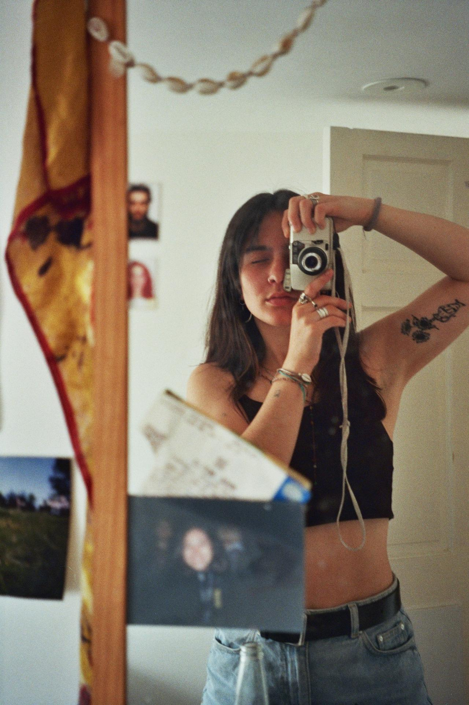

Cities
Events
LIVE
Nightlife
Portraits
About Me

I’m Irene, a Spanish photographer based in Bristol/London, specializing in live music and festival photography.
I'm inspired by how music and artists reflect the current state of our generation. My photography captures what they mean to us — our concerns, passions, and identities.
I’ve worked for festivals like Love Saves the Day, Forwards, DanceCorp, BS24/7 and ShadeCartel.
Contact
- Email: irene@example.com